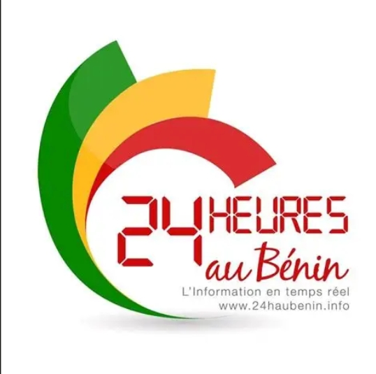
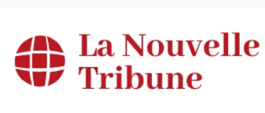
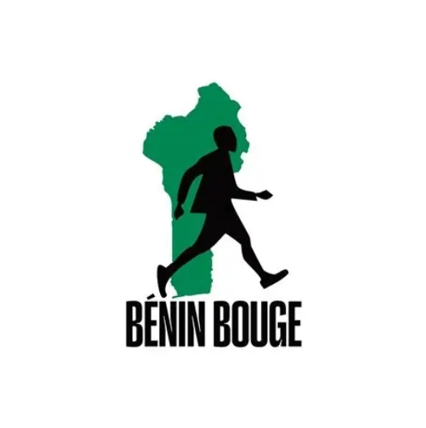
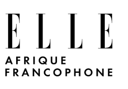
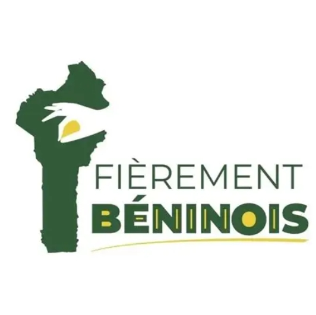
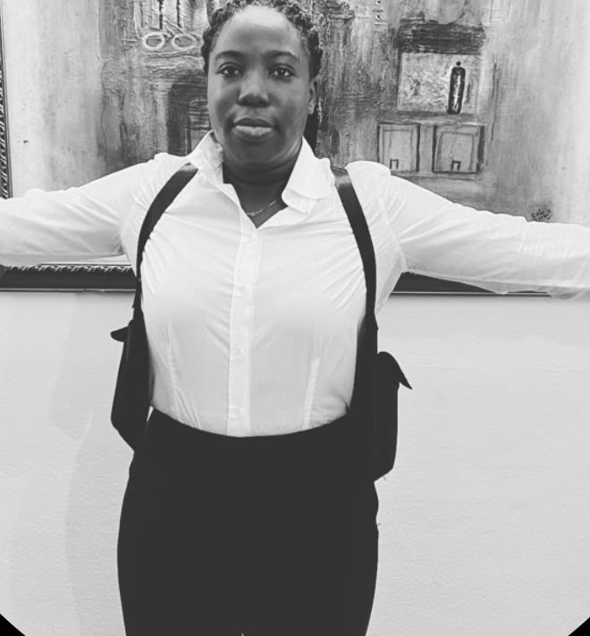

Le projet dans les médias
Presse
Déjà relayé par la presse béninoise et internationale, Les Patronnes fait circuler ses récits bien au-delà des marchés.
Portée cumulée
Les Patronnes poursuit la conversation sur les réseaux, au fil des images, des rencontres et des récits partagés.
Lire l'article
Atelier Bossart
Bénin Web TV

La Nouvelle Tribune

Bénin Bouge

ELLE Afrique Francophone
Visit Ouidah

fierement.bj
DONATE
